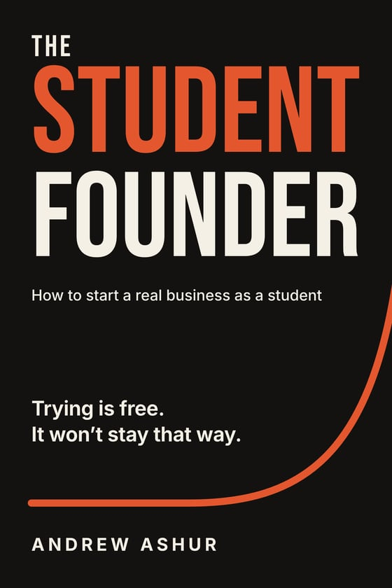

Andrew Ashur · Out February 2027
The Student Founder: Trying is free. It won’t stay that way.

How to start a real business as a student, from the founder who started Lucid Bots in college with forty-two dollars in the company account. While you’re a student, trying costs almost nothing. After graduation, it becomes the most expensive thing you’ll ever buy.
- Andrew Ashur, founder and CEO of Lucid Bots
- Y Combinator S19
- Forbes 30 Under 30
- Inc. 5000 fastest-growing robotics manufacturer in the U.S.
Chicago, 2018
I was standing in a skyscraper elevator in downtown Chicago with blood pooling in my shoes.
The backs of my heels had torn open during the two-mile walk across the city. I could feel the blood soaking through my socks. I didn’t have the money for a cab, so I walked.
In a few seconds the doors would open onto the twenty-eighth floor, where a high-profile CEO would decide whether to invest money into a kid three months out of college with a half-built drone and forty-two dollars in the company account. I knew that if I didn’t start well, I wouldn’t recover from it.
Less than a year before that elevator ride, I knew exactly what I was going to be.
The bet
You will never get a cheaper shot at this.
“Trying is nearly free while you’re a student. After graduation, with a salary to protect, a lease, a title, and a decade of sunk cost, it becomes the most expensive thing you’ll ever buy.”
The book’s first lesson opens on Paul Graham’s warning: “Do not start a startup in college.” Graham’s Y Combinator later funded mine. The warning and the check are both real. The distance between them is what this book is for.
One to zero is a feeling. It is not the math.
One number
One question. Answer it honestly.
I call it your Agency Quotient, and it’s the time between “I should” and “I am.”
Count the days between having an idea and doing the first thing about it that a stranger could react to. Smaller is better, and the best count is zero: the day you see it is the day something exists.
It’s the one variable in this entire book that’s fully in your hands, whatever your bank account, your major, or your connections, and whether or not anyone has ever believed in you yet.
You’ll take it once more on Day 30 of the sprint, after a month of action rather than a month of reading. It isn’t a validated psychological scale. It’s a count, and what it tracks is whether the number is falling toward zero.
0 readers have answered so far. Median: 0 days.
Think of the last idea you had that nobody assigned you. How many days did it sit before you did the first thing about it that a stranger could react to?
Reading about it doesn’t count. If the idea is still sitting there, count from the day you had it to today. The number is still going up.
Run it today.
- Pick the idea. The one you just counted.
- Name the first thing a stranger could react to. A text, a question, a sheet of paper on a wall.
- Do it today. Something has to exist in the world tonight that didn’t exist this morning.
That’s the first rep in the book, and you don’t need the book to do it.
What’s inside
The questions students actually ask.
“Most of the chapters ahead are the questions students actually ask me, in the order they usually ask them, and each of those ends with the homework I’d hand you before our next conversation.”
- The Odds
What happens to the founders who lose, told by two of them.
You can always bet hours.
- The Trap and the Trade
A gear moves because the machine moved. A lever moves the machine.
- How Do I Find an Idea?
Ideas are found. Mine took months of OSHA filings, trade forums, and phone calls to strangers three states away.
- How Do I Find the Time?
A time problem is almost always a priority problem with an energy problem underneath it.
- Who Do I Build With?
Choose a co-founder
the way you’d choose who to be broke with for four years, because that’s roughly the situation.
- How Do I Find Customers?
A deck asks them to believe you. A demo does not have to ask.
- How Do I Build the Product?
From a twelve-dollar soldering iron and a wall of open YouTube tabs.
Obsess over the outcome, not the output.
- How Do I Close Customers?
A no costs you an hour. A maybe costs you the month.
- How Do I Get People to Notice?
You need to make something worth watching, and then you need to let people watch you make it.
- How Do I Build a Team?
The first person who says yes teaches the second one what this place is.
- How Do I Fund It?
When investor advice and your bank statement disagree, the bank statement is never wrong.
- The 30-Day Sprint
Thirty days, in order, cut to your hours.
Do the next best thing. Then do it again.
The graveyard doesn’t usually write books.
Every book like this one I read while I was starting was written by somebody it worked out for. I never once heard from the founders who tried and failed.
Survivorship bias only matters if the losers lose everything. But most of the people in the graveyard of entrepreneurship walk out holding something. A network, a stack of real skills, a story that nobody who played it safe can tell.
The plan
You finish this book holding a plan.
“This page is your plan. Right now it’s blank, and by the last chapter it’s a business plan that fits on one side of one sheet.”
Ten of the chapters ask you for a line, and each one hands it to you at the end of its Run it block. Line zero comes first. Write it now, before you read another page.
Print the Founder’s PageThe Founder’s Page
As printed in the book.
- Zero. The Problem. The problem I keep walking past: . It can be wrong. Line three will replace it with the words of the person who has it.
- One. The Odds. My stop line: dollars and months. My Agency Quotient today: days.
- Two. The Trap and the Trade. A goal I’m chasing this semester because the people around me are chasing it: . Who I caught it from: .
- Three. The Idea. The problem still standing, in the words of the person who has it: “.”
- Four. The Time. The ninety minutes that are genuinely mine: . The hardest problem I’ll spend them on: .
- Five. The Partner. . Four-year vesting, one-year cliff, split /, in writing on . Or alone, for now, with the date I’ll ask the decade question, , and the one person I’d run four weeks with, .
- Six. The Customers. Micro-niche: setting , type or size , trigger , vocabulary , and the people in it I can name. Signal: of used the same words, commitments at the money rung from people who aren’t my friends, sources I could run again.
- Seven. The Build. Input . Transformation . Output . Edge cases .
- Eight. The Close. I decide on , after at least ten conversations and a price said out loud, by the four outcomes in Build, Pivot, or Kill. If I pivot once, I keep . If I change the buyer once, it’s to . Written before I have a reason to argue with it.
- Nine. The Noticing. My one place: . Day 30: a dozen posts up. Day 90: one real-world result out of forty posts.
- Ten. The Money. Payback period: months. Default alive, asked on the of every month: .
When the page is full, or when you can’t wait for it to be, turn to Day 1 of the sprint at the back of this book.

The author
A few steps ahead on the same trail.
I was a student at Davidson College on a mix of financial aid and scholarship, pitching on the Division I baseball team and working three part-time jobs. My dad was a music teacher at my high school. No one in my family came from the startup world, and I had never soldered a wire in my life.
Today Lucid Bots builds robots that clean, paint, and coat the built world. We went through Y Combinator in 2019, we have raised more than $34 million, and Inc. 5000 named us the fastest-growing robotics manufacturer in the United States. Forbes put me on its 30 Under 30 list in 2020.
We started with zero companies to learn from, zero investors I could call, and zero clue what I was doing.
I spent two years at Davidson College’s Hurt Hub working with student founders, and I’ve worked with hundreds of students who want to build. I’m still in it, still learning, still making mistakes most weeks. I wrote this book so you don’t have to learn as many lessons the hard way.
- 2018Graduated Davidson a year early. A $12 soldering iron, a garage, and $42 in the company account.
- 2019Y Combinator, summer batch.
- 2020Forbes 30 Under 30.
- 2021First cleaning drone shipped to a paying customer.
- 2023100th cleaning drone shipped.
- 2024Alumni Innovator-in-Residence at Davidson College from October.
- 2025500th robot deployed. Inc. 5000 fastest-growing robotics manufacturer in the country.
- 2026Closed a $20 million Series B in March.
- 2027The Student Founder, out in February.
FAQ
Fair questions.
What is the book about?
How to start a real business as a student. As a student, the downside of building something real is close to nothing, and the upside is uncapped. It won’t stay that way forever. Most chapters are the questions students actually ask: find an idea, find the time, find a partner, find customers, build it, close them, get noticed, build a team, fund it. A 30-day sprint at the back turns all of it into action.
Who is it for?
College and high school students who want to build something real while trying still costs almost nothing. If your student years are behind you, read it anyway. Only one thing in this book needs the ID card, the door that opens to “I’m a student,” and the rest never asks to see it.
When does it come out?
February 2027. Leave your email and you’ll get chapter one now and one note the day the book is out.
What is the Agency Quotient?
The time between “I should” and “I am.” Count the days between having an idea and doing the first thing about it that a stranger could react to. Smaller is better, and the best count is zero. You take it at the start and again on Day 30 of the sprint. It isn’t a validated psychological scale. It’s a count.
Do I need to start a company for it to be useful?
No. The reps make everything you start next easier, and the book is honest about the founders who lost.
Can I read part of it now?
Yes. Chapter one, Blood in the Shoes, is free on this site and as a PDF. It takes about thirteen minutes.
I teach a class or run a program. Can I use it?
Yes. The appendix has a map for whoever is running a class or a club. For classroom or bulk copies, or a campus talk, email andrewashur@gmail.com.
There is no permission slip.
You have nothing to lose and everything to build. Read chapter one tonight. The book is out February 2027, and I’ll write once, the day it’s available.